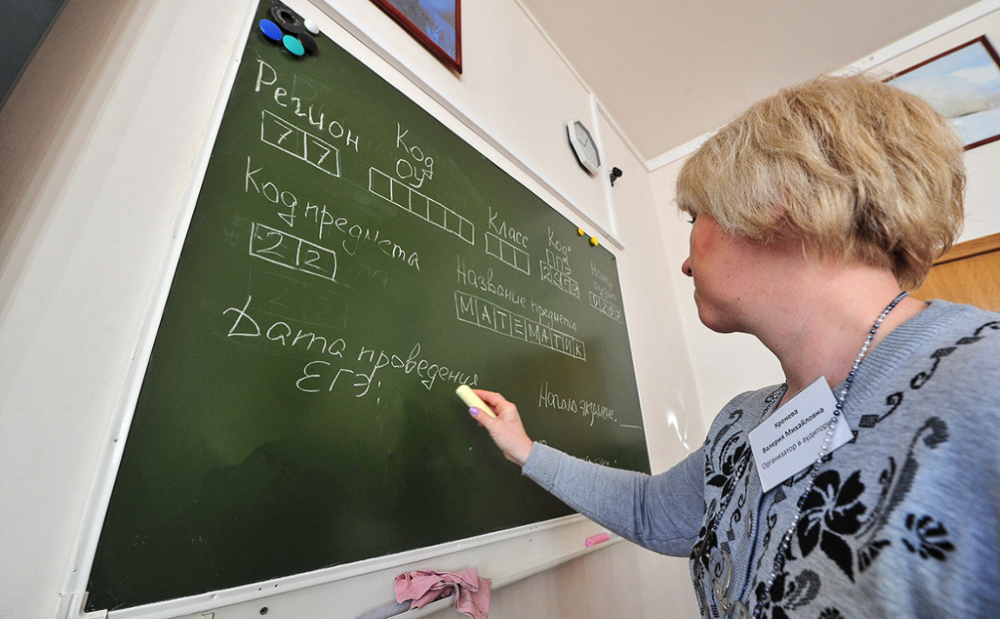
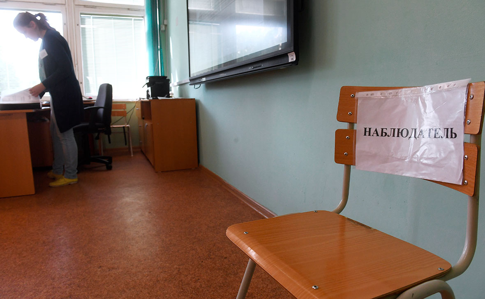

В 2022-м будет несколько новшеств, понимание которых может облегчить жизнь и абитуриентам, и действующим студентам - в этой статье мы расскажем о них.

Сдать ЕГЭ на 100 баллов — одно из самых актуальных желаний молодежи. Однако лишь 1,2% сделали это в прошлом году. Их советы в этой статье.

Рособорнадзор считает, что повышение объективности и прозрачности всего процесса ЕГЭ является одной из ключевых задач государства, так как это прямо влияет на качество образования и мотивирует детей хорошо учиться.
Вузы города Воронежа
Землякам
1)Воронежский институт высоких технологий (ВИВТ)
2)Воронежский государственный технический университет(ВГТУ)
3)Воронежский государственный университет инженерных технологий (ВГУИТ)
4) Воронежский Государственный институт(ВГУ)...
Расскажем о факультетах, нюансах поступления, наличии военной кафедры или общежития:
Читать подробнее
Вузы города Москвы
Москве
1)Российский новый университет
2)Российский государственный университет им. А.Н. Косыгина
3)Институт международных экономических связей
4)Московский технический университет связи и информатики...
Расскажем о факультетах, нюансах поступления, наличии военной кафедры или общежития:
Читать подробнее
Вузы города Санкт-Петербурга
СПБ
1) Северо-Западный институт управления РАНХиГС:
2) Санкт-Петербургский государственный экономический университет
3) Санкт-Петербургский государственный аграрный университет...
Расскажем о факультетах, нюансах поступления, наличии военной кафедры или общежития:
Читать подробнее